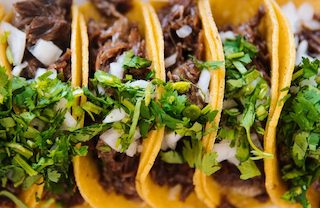

Tacos

Description
Easy yet delicious meal to make in under 5 minutes! You can never go wrong with tacos. Try them with chicken, beef, veggie meat or any other meat of your choice.
Ingredients:
- flour tortillas (or corn tortillas, if you want a more "mexican taste")
- meat of your choice
- extra ingredient of your choice to put on top (lettuce, tomatoes, onion, cilantro, salsa, etc.)
Steps:
- Heat up a pan.
- When the pan is hot place the tortillas on it and wait for them to warm up.
- Season and prepare your meat of choice in a different pan.
- Slice and cut your extra ingredients.
- When tortillas are warm, and meat is cooked, put meat inside tortilla and add toppings.
- Enjoy!